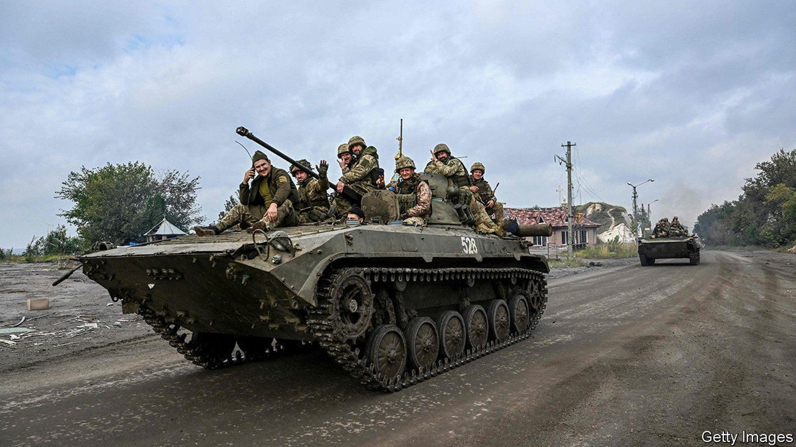
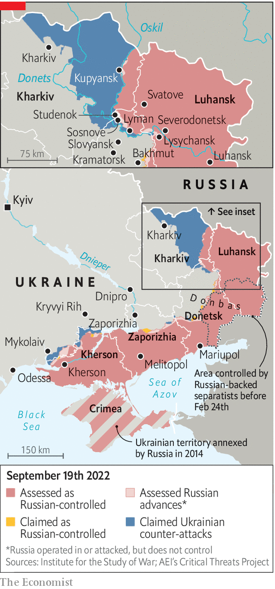

After a lightning advance, Ukrainian forces must decide whether to dig in or press on

One month ago analysts wondered whether Ukraine had the capacity for a big offensive. Now they ask how far it will go. Ukraine’s army has swept through north-eastern Kharkiv province in a lightning advance, liberating huge swathes of territory. In the south it is squeezing Russian units trapped on the west bank of the Dnieper river in Kherson. Russia’s army is depleted, disoriented and demoralised. But Ukraine’s general staff must decide whether to husband their resources or press home their advantage with a third attack.
The offensive in Kharkiv appears to have largely run its course, for now, with Russian units having retreated east of the Oskil river and reservoir. But fighting continues along the ragged edges of the new front lines. Ukraine’s army has captured Studenok and Sosnove on the east bank of the Donets river (into which the Oskil flows). It is also attacking in the north of Donetsk province around the town of Lyman. These moves threaten Russian positions in neighbouring Luhansk province—positions that were captured over the summer, such as Lysychansk (Donetsk and Luhansk together make up the Donbas region). Partisan activity continues, too. On September 16th explosions in Russian-occupied Luhansk city killed the region’s top prosecutor along with his deputy.
It is unclear whether this activity is intended to pin down Russian forces, probe their strength or pave the way for another offensive. Ukrainian troops are eager to capitalise on their momentum, taking advantage of the disarray in the Russian ranks. Some had hoped that the Russian lines in Luhansk would also collapse, allowing Ukraine to drive farther south.

Vladimir Putin, Russia’s president, began this war by recognising the independence of the Donetsk People’s Republic (dnr) and Luhansk People’s Republic (lnr), a pair of separatist statelets armed and backed by Russia since 2014. The republics have been the main rallying cause for Russia’s nationalist zealots, such as Igor Strelkov, a former commander in Donbas, and Zakhar Prilepin, a writer-turned-warmonger. “The main goal is the liberation of the entire territory of Donbas,” Mr Putin reiterated on September 16th. If he proved unable to defend it, the war would lose much of its purpose.
Russian positions in Luhansk are probably defended in larger numbers and better fortified than those in Kharkiv, so may not crack as easily. Many of the units that fled Kharkiv have now been sent to shore up Donetsk. And Russian proxy militia from dnr and lnr, who fled Kharkiv in disarray—some abandoned by regular soldiers—are more likely to stand and fight on their home turf in Donbas. A great deal depends on whether Russia’s high command can stabilise the situation and keep panic from spreading.
Ukraine’s options depend on how much it has left in the tank; no one knows for sure. Ukraine committed up to three brigades to the Kharkiv offensive, according to Christian Freuding, a German brigadier-general who leads the Ukraine team in the German ministry of defence. Some of those forces will need rest and replenishment; others will still be engaged in the residual fighting. A Ukrainian military source suggests that another issue is the urgent matter of digging in at the newly liberated border around Kharkiv city. Building defences will probably divert serious resources for up to two weeks, he says.
“I don’t want to say too much about Ukrainian reserves for obvious reasons,” said one Western official, speaking on September 12th, “but they do have some elements held in reserve which they can deploy forward.” But Ukraine, he notes, like Russia, faces a dilemma over when and where to send these—“what to reinforce and where to accept greater risks”. Other officials warn of the dangers of Ukrainian overreach.
Ukraine’s biggest military effort is still in the southern province of Kherson, where a separate offensive is about to enter its third week. Whereas the Kharkiv attack relied on speed and surprise to punch through Russian lines at a weak point, the Kherson offensive is a more cautious endeavour. It is spread across a much larger front, designed to proceed more slowly, and focused less on territory than on making life as uncomfortable as possible for the Russian soldiers based there.
It is in large part a battle of attrition. Small units are mounting raids into Russian-held territory and Ukrainian rockets have relentlessly hammered ammunition stores and bridges over the Dnieper to cut off Russian supplies. The vdv, the elite Russian airborne forces deployed to Kherson, is taking sustained casualties (though so too is Ukraine). “Morale is low, they are fragmented and…struggling to move forces [west] across the river,” says the Western official, describing the 20,000-strong Russian presence on the west bank. Ukraine may be waiting for Russia’s logistical problems in Kherson to become desperate before attempting a big push by ground forces.
There are other options, too. Volodymyr Zelensky, Ukraine’s president, had originally wanted his army to mount an ambitious offensive through Zaporizhia province that would cut Russian forces in Ukraine into two, slice through Russia’s so-called land bridge to Crimea and eventually recapture Mariupol, the port city which lies on the southern edge of Donbas. Ukrainian generals, and Western advisors, persuaded him that Ukraine did not have sufficient units for such a bold attack, and that it would be reckless.
Ukraine opted instead for the campaign in Kherson, along with the more opportunistic attack on Kharkiv, which initially had much more modest aims. But it still wants to shatter Russian lines in the south. “The big Zaporizhia push to Melitopol is still on unless we see a wider collapse of Russian front lines,” says Franz-Stefan Gady of the International Institute for Strategic Studies, a think-tank, referring to the city that lies roughly equidistant between Kherson and Mariupol. “The question is when and whether enough reserve brigades can be generated to conduct such an offensive in the coming months.”
Ukraine’s artillery pieces are undoubtedly creaking after months of intense use. The demands of two concurrent offensive operations will also have eaten through large amounts of ammunition. But there is little sign that Western support is slowing down. On September 15th America announced yet another arms package for Ukraine, this one worth $600m, including shells and rockets, counter-artillery radars and cold-weather gear.
It is Ukraine that is now dictating the pace. Russian missiles continue to slam into Ukrainian infrastructure, including strikes on a reservoir in Kryvyi Rih, Mr Zelensky’s hometown, upstream from Kherson, on September 14th and 15th. In some places Russian troops continue to advance. They have been attacking Bakhmut in Donetsk, part of a north-south defensive line that shields the cities of Slovyansk and Kramatorsk, for several weeks. They have made progress in recent days, with Russian sources claiming that the industrial fringes of Bakhmut are now being fought over. Yet these attacks are predictable, plodding and costly in terms of casualties. They are unlikely to change the contours of the war.
One European military official says that the Russian withdrawal from Kharkiv province, now largely complete, puts paid to Russian aspirations west of the Dnieper—aspirations that looked implausible even before this month. But, adds the official, Mr Putin has not given up on the idea of severing Ukraine from the Black Sea by taking the port city of Odessa. Russia’s army has considered attacking not through Mykolaiv city, west of Kherson, where it was halted in the early months of the war, but through the northern part of Mykolaiv oblast.
In truth, Russia has neither the manpower nor the agility for a Kharkiv-like breakthrough. It is raising reserve battalions, grouped under a new 3rd Army Corps, based in Mulino and equipped with fairly powerful weapons. Ukrainian officials had thought the new corps might be held back and used for a big offensive. Instead it seems to have been fed into Ukraine piecemeal. Ukraine’s general staff says that some of the corps’ units have been sent to strengthen Russian defences in Donetsk and Zaporizhia, which neighbours Kherson province.
The depth of Russia’s manpower problems, laid bare by the stretched lines in Kharkiv, has been exposed further in recent days. One video circulating on Telegram, a messaging platform used widely by Russian military watchers, showed photographs of young Russian officers who had refused to serve in Ukraine pasted above urinals, as a form of ritual humiliation. They are thought to be from prestigious naval infantry units. “That officers who should be serving as company commanders or deputy commanders in elite units are refusing to deploy tells you something about the extent of the refusenik problem,” observes Rob Lee, an expert at King’s College London.
Another video showed a man who looks like Yevgeny Prigozhin, the head of the Wagner group, a mercenary firm whose fighters have done much of the fighting in Donbas, addressing a group of convicts in a Russian prison. Mr Prigozhin, who once spent nine years in jail for robbery and fraud, offered the convicts their freedom if they served for six months in Ukraine. “If you arrive in Ukraine and decide it’s not for you,” he added, “we will execute you.” In a later statement Mr Prigozhin did not confirm the authenticity of the video, but had words for Russians who may be squeamish about sending convicts to the front line. “It’s either private military companies and prisoners, or your children,” he said. “Decide for yourself.”■